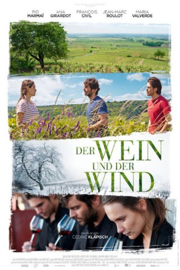
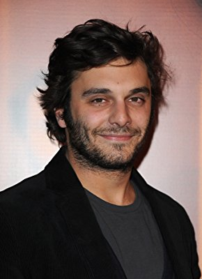
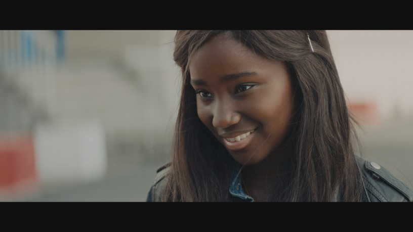
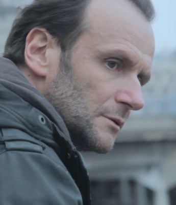
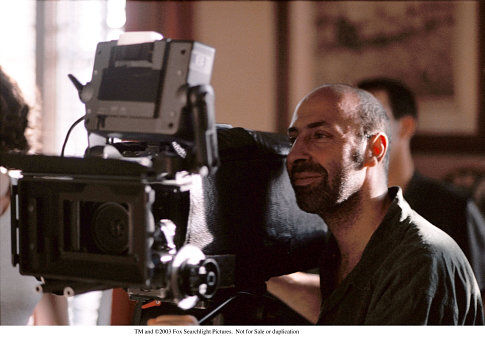

#7743 Der Wein und der Wind
 gesehen am 15.12.2017
gesehen am 15.12.2017
 
 IMDB-Wertung: 6.9 / 10
IMDB-Wertung: 6.9 / 10  Metascore: 58
Metascore: 58 
Es ist Spätsommer im Burgund und die Weinernte steht bevor. Der dreißigjährige Jean kehrt nach vielen Jahren der Funkstille auf das idyllische Familienweingut zurück. Sein Vater liegt im Sterben und seine Geschwister Juliette und Jérémie, die das Gut in der Zwischenzeit aufrechterhalten haben, können jede Unterstützung gebrauchen. So wie sich jedes Erntejahr nach den Jahreszeiten richtet, erkennen die Geschwister, dass manch offene Wunden auch über die Jahre hinweg nicht heilen. Gemeinsam müssen sie entscheiden, ob die Familientradition weitergeführt werden soll oder jeder seinen eigenen Weg geht...
Jahr: 2017
Dauer: 113 Minuten
FSK: 6
Land: Frankreich Studio: Arthaus FilmverleihTonspuren: DTS - ,
Untertitel: Deutsch,
Auflösung: 1080p (1920x800) Größe: 9871 MB
Genre: Drama, Komödie
Regisseur: Cédric Klapisch
Drehbuch: Cédric Klapisch
Soundtrack: Loïc Dury, Christophe Minck
Darsteller:
-  Pio Marmaï als Jean
- Ana Girardot als Juliette
- François Civil als Jérémie
 María Valverde als Alicia
María Valverde als Alicia- Yamée Couture als Océane
 Jean-Marie Winling als Anselme, le père d'Alicia
Jean-Marie Winling als Anselme, le père d'Alicia- Éric Caravaca als Le père
- Tewfik Jallab als Marouane
-  Karidja Touré als Lina
-  Xavier Alcan als Visiteur maison
-  Cédric Klapisch als Un vendangeur (uncredited)
- Jean-Marc Roulot als Marcel
- Florence Pernel als Chantal, la mère d'Alicia
- Bruno Raffaelli als Le notaire
- Eric Bougnon als Gérard, le voisin
- Marina Tomé als La clerc de notaire
- Hervé Mahieux als Vincent, ouvrier agricole
- Didier Dubuisson als Didier, ouvrier agricole
- Jean-Michel Lesoeur als Jean-Michel , ouvrier agricole
- Fanny Capretta als Fanny, la vendangeuse
- Charlène Feres als Charlène, la vendangeuse
- Julie Leflaive als La laborantine
- Sarah Grappin als La mère
- Hugo Soyer als Jean enfant
- Alice de Germay als Juliette enfant
- Alan Morgoev als Jérémie enfant
- Noé Charles als Julien, 3 mois
- Camille Soto als Julien, 7 mois
- Dany Bernollin als Julien, 1 an
- Sean O'Gara-Micol als Ben
- Emile Klapisch als Enfant garden-party
- Léonce Roulot als Enfant garden-party
- Ferdinand Régent als Jean, 20 ans
- Antoine Croset als Serveur garden-party
- Alix de Montille als Agent immobilier
- Raymond Blailock als Visiteur maison
- Jean-Christopher Barro als Visiteur maison
- Michel Baudoin als Visiteur maison
- Dune Baudoin als Visiteuse maison
- Arthur de Villepin als Visiteur maison
- Juliette Joblot als Visiteuse maison
- Pierre Morey als La main du père
- Christophe Minck als Le guitariste
- François-Xavier 'Fixi' Bossard als Le guitariste
- Jean-Steve Bouf als Le vendangeur guitariste et chanteur
- Marciano Carnel als Le vendangeur chanteur
Datei: X:\2017(N-Z)\Wein und der Wind, Der (2017, FSK6, 1920x800).mkv seit 15.12.2017
Festplatte: HD 2017(A-Z)-2018(A-F)
 Es gibt insgesamt 170 Filme in der Gruppe '2017(N-Z)'
Es gibt insgesamt 170 Filme in der Gruppe '2017(N-Z)'